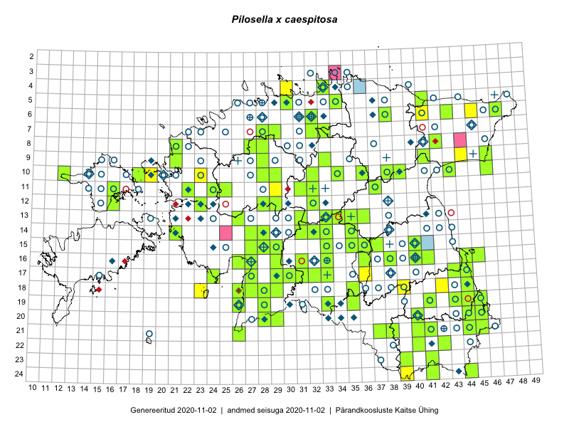

Pilosella x caespitosa
Uuendatud: 2016-12-02
Kaardile koondatud taksonid: Pilosella caespitosa (Dumort.) P.D.Sell & C.West; Pilosella x caespitosa (Dumort.) P.D.Sell & C.West

Kaart põhineb 11 vaatlusel. Taksonit on leitud 9 ruudust.
Viited andmebaasikirjetele
- Toomas Kukk, Tiit Hallikma: 2015-06-11: 11-29: ala
- Malle Leht: 2015-07-09: 18-39: ala
- Toomas Kukk: 2014-07-12: 09-44: ala
- Toomas Kukk, Kersti Tambets, Timo Luhamäe, Janika Sammasto, Sten Mander: 2014-07-29: 18-42: ala
- Toomas Kukk, Thea Kull: 2014-08-22: 10-23: ala
- Toomas Kukk, Peedu Saar: 2014-09-12: 06-41: ala
- Eeva-Maria Jeletsky, Tarmo Niitla: 2015-06-19: 11-16: ala
- Eeva-Maria Jeletsky, Tarmo Niitla: 2015-06-22: 11-16: ala
- Eeva-Maria Jeletsky, Tarmo Niitla: 2015-06-22: 11-16: ala
- Helle Mäemets, Mare Leis: 2015-06-25: 17-36: ala
- Maret Gerz, Jaak-Albert Metsoja, Ott Luuk, Toomas Kukk, Meeli Mesipuu, Thea Kull: 2014-06-09: 24-39: ala